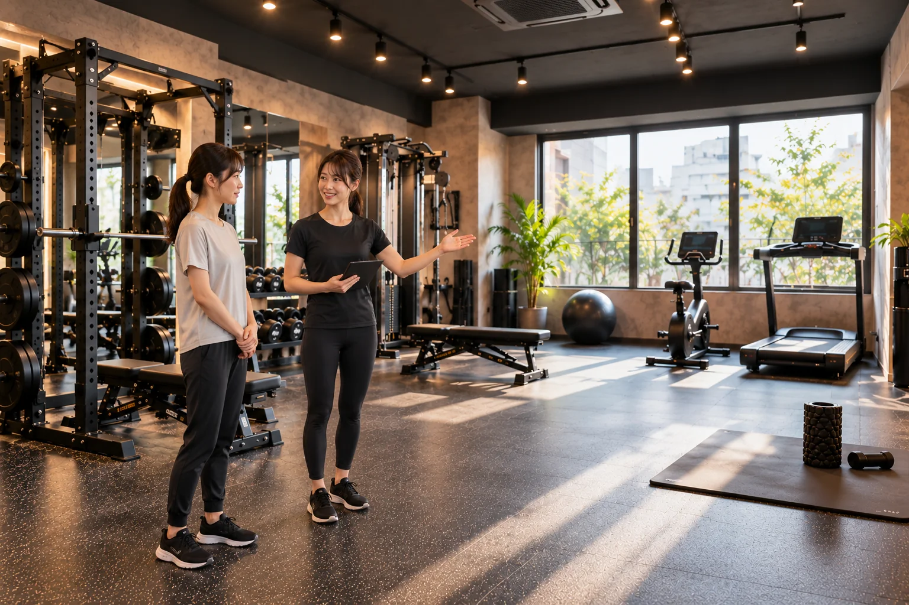

自分のペースで。
自分でメニューを組み、ひとりで集中して利用したい方に。月会費に含まれます。
FIRST VISIT & INFORMATION
予約から利用まで、
迷わず自分の60分へ。
01 / RESERVATION
この制作見本では実際の予約システムは実装していません。想定する予約の流れをご案内します。
Webから利用できる60分枠を確認します。
利用したい日と時間を選びます。
SELFまたはPERSONALを選択。PERSONALではトレーナーも選びます。
内容を確認して予約します。同時に保持できる予約は1枠です。

02 / YOUR FIRST VISIT
初回は、施設・設備と利用方法について説明を受ける場面を想定しています。設備の位置や使い方を確認してから、自分の60分を始めます。
来店は予約時間の5分前を目安にしてください。
03 / FROM ARRIVAL TO EXIT
日時と利用方法を選択。
5分前を目安に到着。
更衣スペースで準備。
予約した60分を利用。
時間内に片付けて退出。
04 / WHAT TO BRING
ウォーターサーバーを利用できます。シャワー設備はありません。
05 / CHOOSE YOUR STYLE
自分でメニューを組み、ひとりで集中して利用したい方に。月会費に含まれます。
フォームやメニューについてサポートを受けたい方に。＋5,500円 / 60分です。
06 / FAQ
はい。周囲を気にせず自分のペースで利用できます。不安な場合は、PERSONALを追加することもできます。
Webから空いている60分枠を確認し、日時とSELFまたはPERSONALを選択して予約します。
必要ありません。通常はSELFを利用し、必要なときだけPERSONALを追加できます。
動きやすい服装、室内シューズ、タオル、水をご用意ください。ウォーターサーバーは利用できます。
SELFはひとりで自分のペースで利用します。PERSONALはトレーナーのマンツーマンサポートを追加する利用方法です。
同時に保持できる予約は1枠です。利用終了後から次の予約ができます。
前日まで無料です。当日キャンセルは利用料金相当となり、SELFについては月会費制との整合を含め規定に基づく取り扱いです。
シャワー設備はありません。更衣スペースは用意しています。
はい。PERSONALの予約時に、目的に合わせて5名から選択できます。
07 / ACCESS & INFORMATION
詳細住所および地図は、この架空店舗サイトでは設定していません。
※この電話番号はWebサイト制作見本用のダミー表示です。
YOURFIRST VISIT.
予約した時間に、
自分だけのトレーニング空間を。